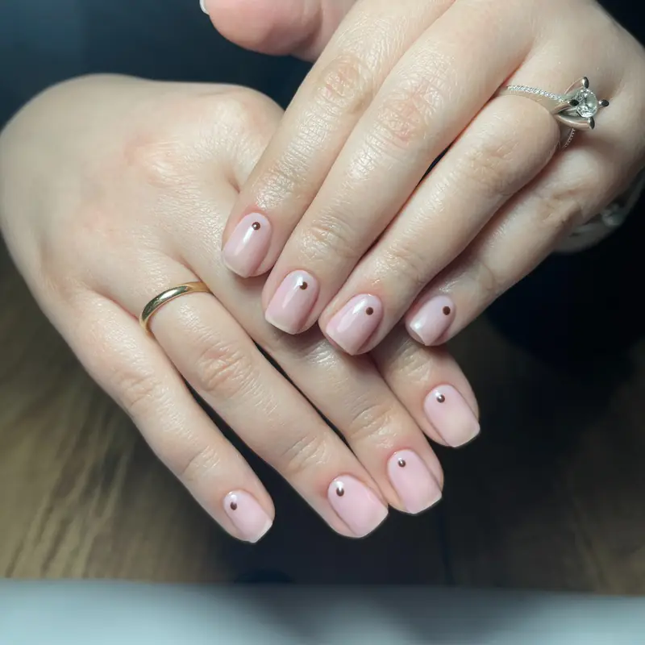

İzmir kalıcı oje uygulaması arıyorsanız, Fleura Nails; hijyen odaklı çalışma düzeni, premium ürün seçimi ve tırnak yapınıza göre kişiselleştirilen uygulamalarla öne çıkar.

Neden Fleura Nails Kalıcı Oje?
Kalıcı oje işlemi yalnızca estetik değil, aynı zamanda doğru hazırlık ve doğru teknik gerektirir. İzmir'deki müşterilerimiz için her seansa tırnak analizi ile başlıyor, dayanıklılığı artıran ve doğal görünümü koruyan bir uygulama planı oluşturuyoruz. İzmir merkezin yanı sıra Çeşme ve Alaçatı başta olmak üzere çevre ilçelerden gelen misafirlerimize de aynı özenli hizmeti sunuyoruz.
Uzun Süre Parlaklık
Doğru katmanlama ve kaliteli ürünlerle 2-3 hafta canlı görünüm hedeflenir.
Hijyenik Süreç
Ekipmanlar her müşteri sonrası sterilize edilir, işlem adımları güvenli şekilde uygulanır.
Renk ve Stil Seçenekleri
Minimal tonlardan iddialı renklere kadar tarzınıza uygun bir görünüm birlikte planlanır.
İzmir Kalıcı Oje Hizmet İçeriği
- Klasik Kalıcı Oje: Gündelik kullanım için sade, temiz ve zarif sonuçlar.
- French Kalıcı Oje: Zamansız, bakımlı ve profesyonel görünüm isteyenler için.
- Güçlendirme Destekli Uygulama: İnce ve kırılgan tırnaklarda daha dayanıklı kullanım.
- Renk Yenileme: Eski uygulamanın güvenli çıkarılması ve yeni renk geçişi.
- Bakım Önerisi: Uygulama sonrası kullanım ve koruma için kişisel tavsiyeler.
İzmir Evde Kalıcı Oje ve Manikür
Fleura Nails'in fiziksel salonu bulunmuyor; kalıcı oje ve manikür uygulamasını sizin adresinizde yapıyoruz. Ev, ofis ya da otel olması fark etmiyor — lamba, ekipman ve malzemenin tamamı bizimle geliyor. Randevunuzu kendi salonunuzda geçirdiğiniz için trafik, park ve sıra bekleme derdi kalmıyor; işlem bittiğinde çıkıp bir yere gitmeniz gerekmiyor.
Randevu ve süreç nasıl işliyor?
Adresinizi, istediğiniz uygulamayı ve uygun gününüzü WhatsApp üzerinden yazmanız yeterli. Renk konusunda kararsızsanız kombininizi veya beğendiğiniz bir referans görseli gönderebilirsiniz; gelirken uygun tonları yanımızda getiriyoruz. Mevcut bir uygulamanız varsa fotoğrafını göndermeniz, söküm gerekip gerekmediğini ve toplam süreyi baştan netleştirmemizi sağlıyor.
Hangi bölgelere geliyoruz?
İzmir genelinde hizmet veriyoruz; Karşıyaka, Bornova, Narlıdere, Bayraklı, Konak ve Gaziemir için bölgeye özel sayfalarımız var. Çeşme, Alaçatı ve Urla gibi noktalara da geliyoruz; merkez ilçelerde ulaşım fiyata dahil, uzak bölgelerde mesafeye göre fark doğabiliyor ve bunu randevudan önce söylüyoruz.
Evde ne hazırlamanız gerekiyor?
Masa yüksekliğinde bir yüzey, iki sandalye ve yakında bir priz yeterli. Çalışma alanını kendi örtümüzle kuruyor, işlem sonunda toplayarak yanımızda götürüyoruz. Metal ekipmanlarımız her müşteri sonrası otoklavda sterilize ediliyor; törpü ve buffer gibi malzemelerde tek kullanımlık ürünler kullanıyoruz ve kurduğumuz alanı her uygulama öncesi dezenfekte ediyoruz.
Ne kadar sürüyor?
Manikür ve kalıcı oje birlikte ortalama 45-75 dakika sürüyor. Aynı randevuda pedikür de isterseniz süre uzuyor, bunu planlarken hesaba katıyoruz. Aynı adreste birkaç kişiyseniz arka arkaya uygulama yapabiliyoruz; bu durumda kişi başı daha avantajlı bir fiyat sunabiliyoruz.
İzmir Kalıcı Oje Randevusu Alın
Uygun saatleri öğrenmek, fiyat bilgisi almak ve tarzınıza en uygun kalıcı oje uygulamasını planlamak için hemen iletişime geçin.
İlgili hizmetler: İzmir protez tırnak · Balçova protez tırnak · Tırnak bakım blogu
Sık Sorulan Sorular
Kalıcı oje ne kadar sürede uygulanır?
İşlem yoğunluğa ve tırnak hazırlığına göre ortalama 45-75 dakika arasında tamamlanır.
Kalıcı oje çıkarma işlemi nasıl yapılır?
Doğal tırnak yapısını korumak için profesyonel çıkarma teknikleri ile güvenli şekilde temizlenir.
Kalıcı oje ne kadar dayanır?
Kullanım alışkanlıklarına göre kalıcı oje genellikle 2-3 hafta dayanır. Ev işlerinde eldiven kullanmak ve kütikül yağını düzenli uygulamak, uygulamanın ömrünü gözle görülür şekilde uzatır. Detaylar için kalıcı oje bakım rehberimize göz atabilirsiniz.
Evde kalıcı oje hizmeti nasıl oluyor?
Tüm ekipman ve malzemeyle adresinize geliyoruz. Masa yüksekliğinde bir yüzey, iki sandalye ve bir priz yeterli; çalışma alanını kendi örtümüzle kurup işlem sonunda topluyoruz. Ayrıntılar için evde kalıcı oje bölümümüze bakabilirsiniz.
Manikür kalıcı oje fiyatına dahil mi?
Manikür + kalıcı oje tek paket olarak 1.150 ₺'den başlıyor; yani temel manikür bu tutara dahildir. Güncel tüm tutarlar için fiyat sayfamıza bakabilirsiniz.
Kalıcı oje doğal tırnağa zarar verir mi?
Doğru teknik ve profesyonel çıkarma ile doğal tırnak yapısı korunur. Zarar genellikle uygulamanın kendisinden değil, zorlayarak sökmekten kaynaklanır; bu yüzden söküm işlemini asla kendiniz kazımayın.
Hangi ilçelerden randevu alabiliyorum?
İzmir genelinden, Çeşme ve Alaçatı dahil çevre bölgelerden randevu planlaması yapılır. Detaylar için WhatsApp üzerinden yazabilirsiniz.